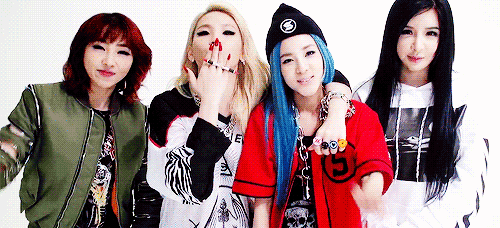
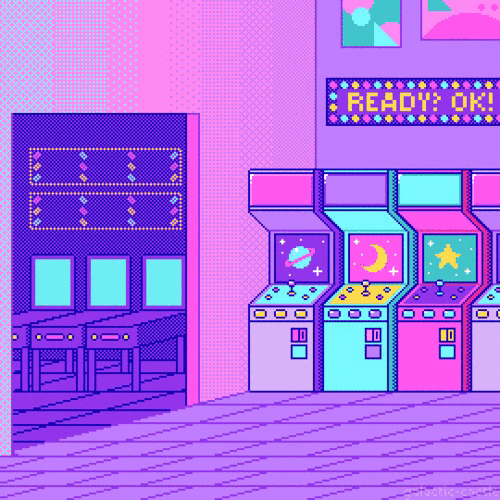
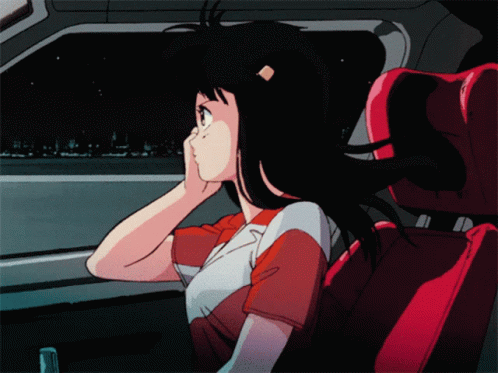

시 간 의 조 각 들
강/수/진
취향의_것들

o
o
"I LOVED YOU so bAd"

========================================================
이 런 감 성 이 너 무 좋 다
 
_FANTASTIC
20살이 되어서 민증을 처음 받았을때는 참 기분이 좋았다.
어른이 되었다는게 신났다. 술도 처음 마셔보고 이것저것 놀며 즐거웠다.
하지만 요즈음에 과제와 수업을 듣고, 또 미래의 일을 생각하면 마냥 기쁘지만은 않다. 학점과 취업이 벌써부터 걱정되고, 경제에 관심이 가기 시작한다.
이렇게 부담감이 쌓여가는 것이 어른인걸까. 무섭다.
어른다운 어른이 되기 위해, 노력하자. 나에게 주어진 일을 내평겨치지 말자.
지침서
1. 세상의 불공평함을 인정해라. 그리고 행동해라.
2. "완벽히 준비됐을 때"라는 말은 존재하지 않는다.
3. 정말로 부끄럽고 비겁한 행동은, 알면서도 행동하지 않는것이다. 현실에 안주하지 말 것. 내가 나를 버리지 말 것.
4. 예수도, 갈릴레오 갈릴레이도, 많은 사람들의 핍박을 받았다. 돌을 맞는 것을 두려워 하지 마라. 타인에게 위축당해 행동을 검열하지 마라.
5. 나의 작은 경험으로는 나의 가능성을 온전히 평가할 수 없다. 감히 재단하려 하지말것. 한계를 알기위해 도전하고, 넘기위해 노력할 것.
6. 감사함을 가져라.
! 나에게 부끄럽지 않은 사람이 되자 !